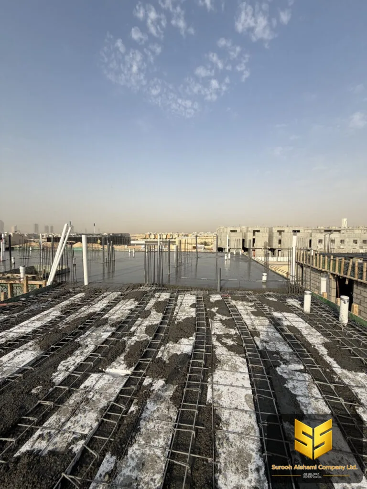

إدارة المشاريع
استلام المشروع قبل التسليم: دليل الفحص الكامل
المشروع ينتهي على الورق قبل أن ينتهي في الموقع. الفاتورة النهائية مرتبطة بمطابقة، والضمان يبدأ من تاريخ الاستلام لا من تاريخ الصبّ.
معظم من تجاوزهم مشكلة عند التسليم لم يواجهوا مشكلة في التنفيذ، بل مشكلة في التوثيق: تسليح صحيح لكنه غير موثّق، وعزل ممتاز لكن دون شهادة، وأعمال خرسانية مطابقة للمخطط لكن دون محضر صبّ. النتيجة أن المالك يدفع ثم يجد أن الضمان غير مُفعَّل على الورق.
ولهذا السبب الاستلام ليس لحظة عابرة. الاستلام محضر يُوقَّع، ويربط بين ثلاث نتائج لا يجوز فصلها: مطابقة العمل للمواصفات، وتفعيل الضمان، وإغلاق المستحقات المالية.
لماذا الاستلام إجراء وليس مجاملة
السبب الأول قانوني ومالي: في معظم العقود لا تُدفع الدفعة الأخيرة إلا بعد محضر استلام. والسبب الثاني فني: بعد تحميل الأثاث وتركيب التشطيبات النهائية يصعب الوصول إلى العيوب المخفية، فتزداد كلفة إصلاحها على المالك.
والسبب الثالث الأخطر: الضمان يبدأ من تاريخ الاستلام. فإذا استلمت بلا فحص، فأنت قد منحت المتعاقد حقاً في إغلاق ملف الضمان قبل أن تظهر أي مشكلة.
فحص الهيكل الإنشائي
ابدأ من أعلى المبنى ثم أنزل تدريجياً، لأن العيب في الطابق العلوي ينتشر أثره إلى ما تحته. الفحص البصري هنا لا يغني عن الحساب، لكنه يكشف ما لا تكشفه المخططات.
- الأعمدة والأسوار. تأكد من عدم وجود تشقق شعري أو تشقق مائل. التشقق الشعري البسيط انكماشي، أما المائل أو العرضي فمؤشر على مشكلة في التحميل أوفي الصبّ.
- مطابقة الأبعاد. قِس المسافات بين الأعمدة وقارنها بالمخطط. الانحراف الأكبر من المسموح يغيّر توزيع الأحمال.
- اتساع الشقوق بين البلاطات. يجب أن يكون الشق ضيقاً ومتساوياً، لا مفتوحاً في جهة ومضغوطاً في أخرى.
- الأساسات المدفونة. تأكد من عدم ظهور أي جزء فوق منسوب التربة، ومن عدم وجود تشقق انفصالي عند القاعدة.
فحص الخرسانة نفسها
فحص الخرسانة في الاستلام يعتمد على ثلاثة مصادر: السجلات، والعيّنات، والفحص البصري. لا يكفي أي منها وحده.
| البند | وسيلة الفحص | ما يطمئنك |
|---|---|---|
| المقاومة المطلوبة | نتائج مكعبات المخبر | كل النتائج فوق الحد الأدنى المطلوب |
| نسبة الماء إلى الأسمنت | شهادة الخلطة من المصنع | مطابقة لما تطلبه المواصفات |
| التشققات | فحص بصري كامل للعناصر | لا تشقق مائل ولا تشقق عريض |
| النفاذية | اختبار الماء على السطح | عدم ظهور بقع رطوبة بعد ساعات من الاختبار |
| التساوي | مسطرة مستقيمة | لا فجوة تتجاوز الحد المسموح |
نقطة يستحقها الانتباه: مكعبات الاختبار لا تُخبر بمشكلة في جزء محدد من المبنى. هي تُخبر بأن الخلطة سليمة إجمالاً. لذلك يبقى الفحص البصري ضرورياً لاكمالياً.
التشطيبات والعزل
العزل هو العنصر الأكثر إخفاقاً في مشاريع الرياض، لأن إخفاقه لا يظهر في يوم التسليم. يظهر بعد موسم الأمطار، حين يظهر البلل في سقف الطابق العلوي أو في جدار المطبخ الأرضي.
- اسأل عن شهادات العزل. ليس عن وعد شفهي، بل عن شهادة من المنتج مع وصف النظام المستخدم وعدد الطبقات.
- افحص الفواصل. عند الأركان والحواف، حيث يفشل العزل عادةً لأن تلك المواضع أصعب من غيرها.
- تأكد من اتجاه التفريغ. مخرجات التصريف يجب أن تكون منخفضة عن منسوب الغرفة، وإلا تجمّع الماء وتسبب البلل.
- اختبر العزل بعد المطر. تأجيل الاستلام إلى ما بعد مطرة واحدة يكشف ما لا يكشفه أي فحص داخلي.

المستندات التي يجب أن تصلك
المستندات هي ما يحوّل العمل من محاولة إلى حق. اطلبها كلها في يوم الاستلام، ولا تقبل تسليماً ناقصاً مقابل وعود لاحقة.
قائمة المستندات
محاضر الصبّ لكل عملية خرسانية، ونتائج اختبارات المكعبات، وشهادات مطابقة الخلطة، وشهادات العزل، ومخطط كما بُني مع أي تعديلات، وضمان المورد كتابياً، وإفراغ الموقع الكامل عن المستحقات، ومخزن المفاتيح مع بيان ما سُلّم.
وأهم هذه المستندات ليس الورق بل نسبه إلى المشروع. تأكد أن رقم الشهادة واسم المنتج وتاريخ الصبّ يتطابق مع محضر الصبّ نفسه. الشهادة الصحيحة من مشروع آخر لا قيمة لها.
عيوب شائعة عند التسليم
- فراغات حول الحديد في صبّ القاعدة. تظهر بعد الصبّ مباشرة، وتكشف عن رداءة الانسياب أثناء الصبّ.
- تشقق شبكي على الأسطح. ناتج عن جفاف سريع وعدم معالجة، ويمرّ دون ملاحظة حتى يصير خللاً ظاهراً.
- نقاط رطوبة في الأرضيات بعد التشطيب. تعني أن الرطوبة صاعدة من تحتها، وأن العزل الأرضي غير منفّذ.
- فواصل بارزة أو ناقصة. في الأسطح والبلاطات، تسرّب الماء منها مباشرة إلى ما تحتها.
- ألوان وأسطح غير متجانسة. نتيجة خلط غير منتظم، وهي عيوب تُصلح قبل التشطيب وتكلفتها فيه أعلى بكثير.
أهم ما في هذه المقالة
- الاستلام محضر يُوقَّع، لا مجاملة شفهية.
- الضمان يبدأ من تاريخ الاستلام لا من تاريخ الصبّ.
- السجلات والعيّنات والفحص البصري ثلاثة مصادر لا واحد منها يكفي.
- العزل لا يُفحص بعد المطر، بل قبله.
- لا تسلم ناقص المستندات مهما كان الاستعجال.
كيف تستلم بنفسك
خصّص يوماً كاملاً للفحص، ولا تفحص في آخر المساء بين مهام أخرى. خذ معك: مسطرة ومتر، وكاميرا، ودفتراً لكتابة الملاحظات، ومندوباً فنياً مستقلاً إن كان المشروع كبيراً.
صوّر كل عنصر قبل التسليم. الصور قبل التسليم هي مرجعك في أي خلاف لاحق حول ما إذا كان العيب موجوداً من البداية. وهذا وحده يبقي موقفك قوياً.
وإذا ظهرت عيوب، فلا تكتب محضر التسليم ثم تعود بتصحيح. اكتب العيوب في المحضر، وحدّد لها موعداً، واحتفظ بحصة من الدفعة حتى تُغلق.
عندك موقع في الرياض وتحتاج عرض سعر؟
أرسل لنا تفاصيل المشروع، ونعود إليك بعرض سعر مبدئي.